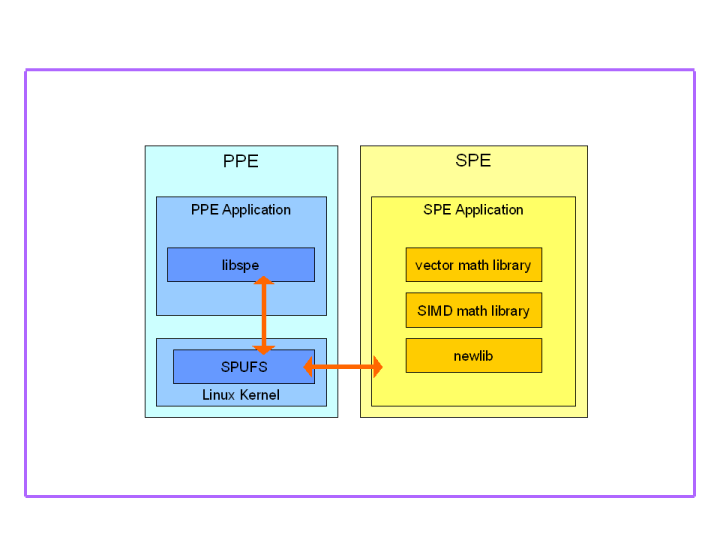
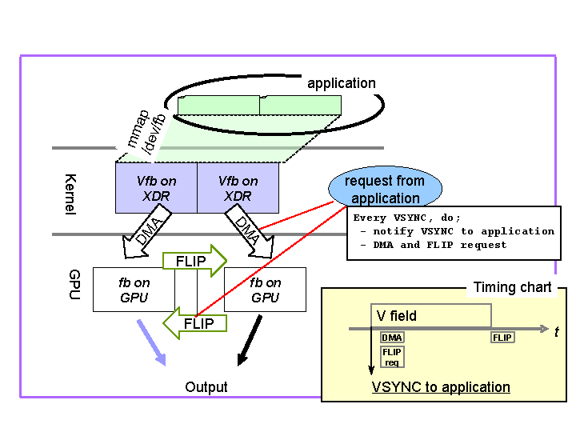
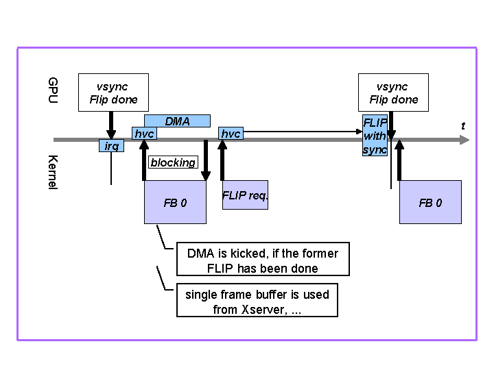
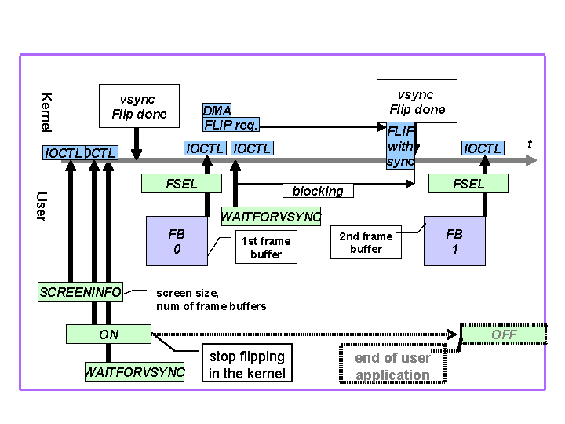
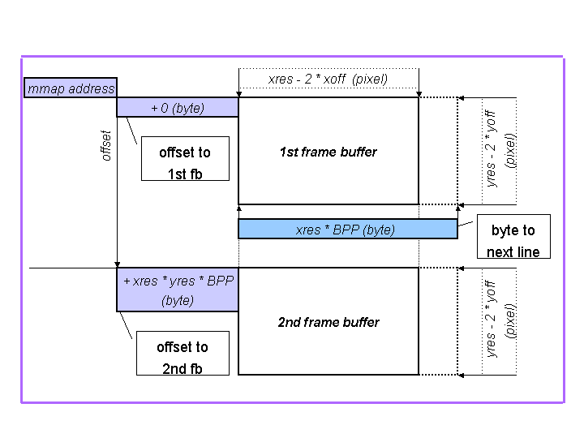

© 2008 Sony Computer Entertainment Inc.
© 2006,2007,2008 Sony Corporation
Permission is granted to copy, distribute and/or modify this document under the terms of the GNU Free Documentation License, Version 1.2 published by the Free Software Foundation; with no Invariant Sections, no Front-Cover Texts, and no Back-Cover Texts. A copy of the license is included in the section entitled "GNU Free Documentation License".
DISCLAIMER
THIS
DOCUMENT IS
PROVIDED "AS IS," AND COPYRIGHT HOLDERS MAKE NO REPRESENTATIONS OR
WARRANTIES, EXPRESS OR IMPLIED, INCLUDING, BUT NOT LIMITED TO,
WARRANTIES OF MERCHANTABILITY, FITNESS FOR A PARTICULAR PURPOSE,
NON-INFRINGEMENT, OR TITLE; THAT THE CONTENTS OF THE DOCUMENT ARE
SUITABLE FOR ANY PURPOSE; NOR THAT THE IMPLEMENTATION OF SUCH CONTENTS
WILL NOT INFRINGE ANY THIRD PARTY PATENTS, COPYRIGHTS, TRADEMARKS OR
OTHER RIGHTS.
COPYRIGHT HOLDERS
WILL NOT BE LIABLE FOR ANY DIRECT, INDIRECT, SPECIAL OR CONSEQUENTIAL
DAMAGES ARISING OUT OF ANY USE OF THE DOCUMENT OR THE PERFORMANCE OR
IMPLEMENTATION OF THE CONTENTS THEREOF.
TRADEMARK NOTICE
"PLAYSTATION" and "PS3" are registered trademarks of Sony Computer
Entertainment Inc. "Cell Broadband Engine" is a trademark of
Sony Computer Entertainment Inc. Linux® is the registered
trademark of Linus Torvalds in the U.S. and other countries.
Other company, product and service names may be registered
trademarks, trademarks or service marks of others.TRADEMARK NOTICE
This note explains how to setup programing environment, programing environment itself including SPE programming and PS3 platform specific programming.
The conventional development and runtime environment on Linux is used to develop and to run PPE programs. Readers of the document are supposed to have generic knowledge of application programming on such conventional Linux, and descriptions about details of application programming will not provided here. Please refer to manuals of the Linux distribution which you use, and/or published books, for details of application programming environment on Linux.
Fig.1 shows overview of SPE runtime environment, including diagram consists of SPUFS from kernel, libspe and SPU newlib.

Fig.1 Diagram of SPE runtime environment
Linux kernel has equipped SPUFS for abstraction of SPEs, and application programs can handle SPEs by using libspe, which utilize the SPUFS internally. For SPE side, GCC is available as compilers, and newlib is provided as a standard C library.
Libspe, the SPE management library, is needed to access SPEs by application programs on PS3 Linux. On PS3 Linux, libspe version 2 (libspe2) is recommended as a standard library. Please refer to the manual “SPE Runtime Management Library Version 2.2” for details.
At least, to generate SPE programs, SPE targeting toolchain packages, i.e. SPU binutils, SPU gcc and newlib, are needed.
In addition to this minimum development environment, many useful libraries and tools are also available; e.g. SIMD math library, etc.
PPE programs can be developed and run in the same way as conventional programs on Linux. In general, packages such as GCC, glibc and GDB, are used to develop PPE programs in C and/or C++. Please refer manuals of Linux distribution which you use, for detail.
In addition to such conventional programming tools, some extensions and/or additional tools are also available. Please refer to the “Linux on Cell” page at Barcelona Supercomputing Center (BSC) website for details.
To develop SPE programs, at least, the following packages are needed to be installed, in addition to the PPE programming environment. They are available as a part of Cell/B.E. SDK 3.0 at Barcelona Supercomputing Center (BSC) website (http://www.bsc.es/). To reach the pages related to Cell Linux, you would visit the page "Linux on Cell", then go down to "Cell BE Components".
The SPE management library “libspe” version 2, aka libspe2, is needed to run SPE programs on PS3 Linux.
At least, SPU compilers, binutils, C runtime library are needed in order to generate SPE programs.
Other newer versions of SPU toolchain and SPE management library may become available, and they are also expected to work well with PS3 Linux.
After installing Linux distribution, install the add-on packages above by executing the following command:
# rpm -ivh *.rpm
The frame buffer on PS3 platform has been implemented as virtual frame buffer allocated on main memory. We’ll explain how it works and how user program could be control it, here.
Fig. 2 shows a whole picture of double buffering and VSYNC support with the frame buffer device.

Fig.
2 Virtual frame buffer and VSYNC timing
Virtual frame buffer is allocated two sides, on main memory in Kernel space. User space application can use this frame buffer with mapping it to user space by mmap(). With mmap() against /dev/fb, User can map up to 2 buffers and choose two model. One is “single buffer”. With this model, user can map and draw to frame buffer just same as conventional frame buffer. The kernel daemon would take place flip hvc. The other is “double buffer” model, with it application need to take care to issue flip through ioctl by program itself, although it could achieve flicker-less drawing
Fig.3 shows timing chart of hypervisor call, dma and irq with a single buffer scenario, inside Kernel.

Fig.
3 VFB behavior in the Linux kernel
The kernel daemon “ps3fbd” implements single frame buffer model and controls its dma and flip using hvc.
Fig.4 shows timing of IOCTL, hypervisor call, dma and irq with double buffer scenario.

Fig. 4 IOCTL usage from the
user Application
From the user applications, the frame buffer can be used with double buffering as following.
You can find the sample code as "vsync-sample" package.
This sample code is a simple drawing program with frame buffer using double buffering.
Fig.5 shows frame buffer size and offset in user space.

Fig. 5 frame buffer size and offset in user space
| 1.6 | Jan 28 2008 |
|
| 1.5 | Oct 26 2007 |
|
| 1.4 | Aug 17 2007 |
|
| 1.3 | Apr 25 2007 |
|
| 1.1 | Dec 8 2006 |
|
| 1.0 | Nov 11 2006 |
|